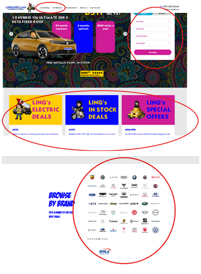
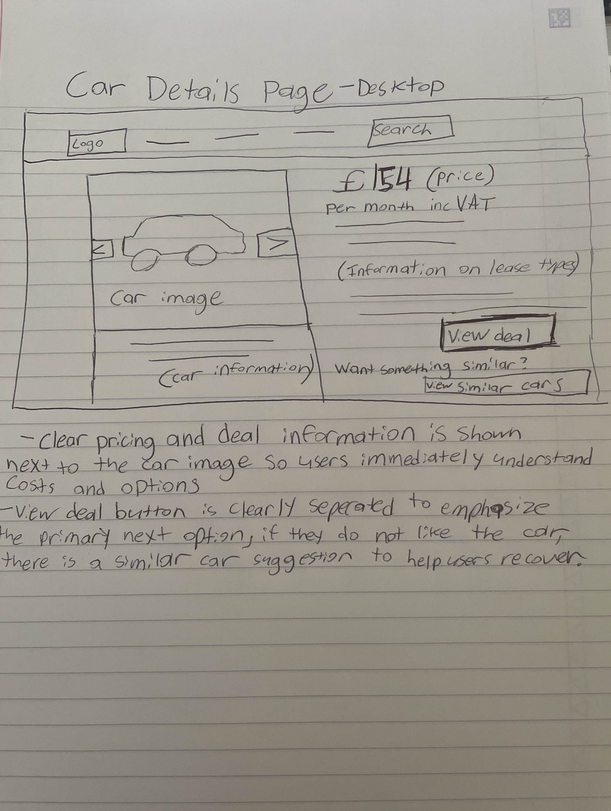
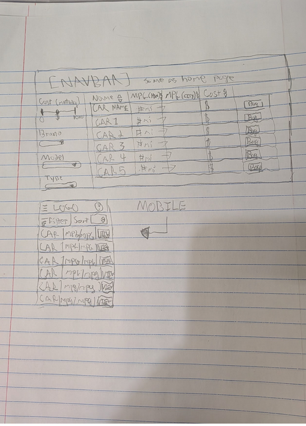
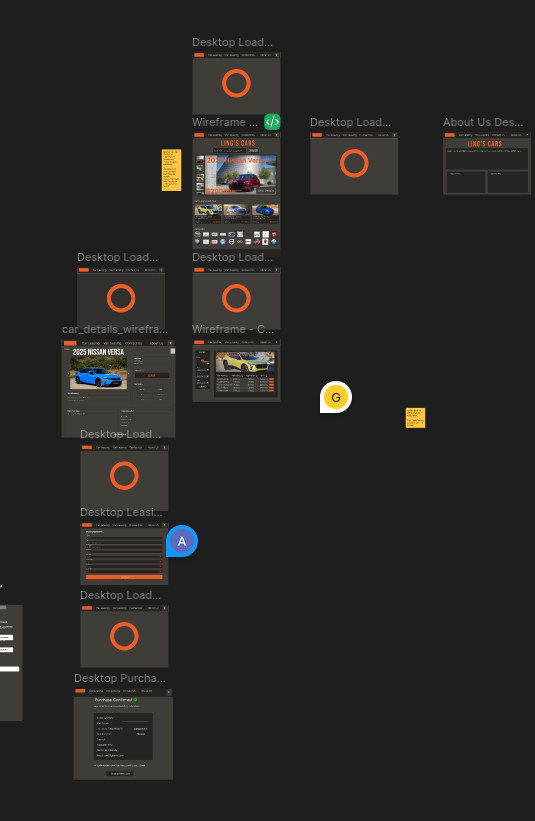
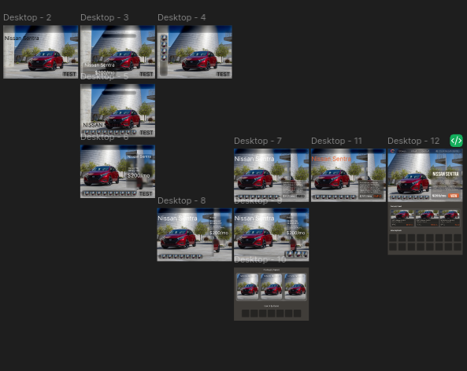

Ling's car website has significant usability issues related to visual hierarchy and cognitive load. The page is cluttered with high-frequency visual effects, bright colors, and excessive text, making it difficult for users to understand where to focus for primary tasks such as finding price information or locating a car. As layout and navigation elements change constantly, it increases user confusion and forces users to spend extra time trying to interpret the application.

As such, we went in with a few design goals:
- Ensure home screen information is never overwritten.
- Ensure all home screen information has pre-defined space if it cannot be immediately displayed.
- Ensure visual hierarchy of text remains consistent across all pages.
- Reduce visual clutter by limiting the number of fonts, colors, and decorative elements used on each screen.
- Improve the readability of pages by using consistent spacing, alignment, and margins to separate sections very clearly.
The Process
We went through the prototype testing phase, as prescribed by the assignments themselves. We iteratively created screens, did user testing, and further refined said screens based on user feedback.
Round 1: Peer Usability Testing
The first round of peer usability testing gave us feedback on both the design itself and how we should conduct testing. A significant issue we ran into during testing was repetition of questions and needing higher levels of specificity when it comes to tasks. For example, when we had the task "Locate a brand of car you would like to purchase from," we instead should've worded it "Locate and select the Ford brand as you would while purchasing a car," or a similar variation. Higher levels of specificity would lead to better results.
While this mistake would be repeated to a lesser degree on following assignments, it was caught early and addressed for the most part. After testing, we noticed that users wanted specific information, and our questions would be best answered by said specific information, making our tests less effective than we would've liked. We addressed this by adding specific information, as well as further defining navigational features by ensuring a search bar would be added and placed in a key location — as users wanted broader and easier-to-access navigation.
We used these sketches to guide our first round of revisions:


Round 2: Peer Usability Testing
The second round of peer usability testing gave us good feedback on the discoverability of our website. While users would parse our website fine after having used it a couple of times, any first navigation would be unusually difficult — key elements and information were not visually distinct from less important elements, and navigational elements often blended in with non-navigational ones. We used size to draw users towards key elements such as names, prices, and navigational utilities.
We used these wireframes to inform this round of changes:

Figma workspace — iterative desktop prototype screens from early to mid-development.
Final Prototype & Implementation
We got more important feedback from the final prototype. While this was in part due to the nature of a Figma site, users were often caught off guard by the results of their actions, or unsure where buttons or some elements would lead. For example, during a test I noticed that the user would hesitate on portions we thought were easier to navigate, and then click on things we didn't intend — such as the information bar rather than the navigational button — taking considerable time.
We inferred that we likely needed better signifiers regarding clickable elements, and implemented improved hover states, which seemed to clear that confusion up. We also found that unimplemented form validation confused users, leading them to think their input was correct when it wasn't (or vice versa), which was addressed and made note of.

Final prototype screens — home, car details, leasing form, and purchase confirmation.
We then developed the site into what you see at the link above. We did have feedback post-implementation regarding the design of the site itself, leading to some significant visual changes hoping to add elevation and other modern design concepts. Notable changes included ensuring that users are presented with minimal but direct choices at the start, while still being given the navigational freedom expected of a vehicle leasing website. This was done by removing information from the hero but adding a general search bar to the header, moving search-and-filter information to other pages. This removed initial friction and placed it where users already expect to have to sort through information.
We also ensured that information would never be removed in different states of the website — referencing the original site's problem of hiding navigational elements after viewing a few cars. By ensuring consistency and being more cognizant of what information users were presented with at the start, we have reduced the learning curve of the site and improved it markedly.